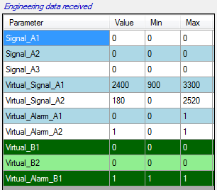

As per manual mode, virtual channels can be computed based on values received on the CAN bus while a cycle is played. This can be particularly useful if virtual channels are alarms sent to a device to stop unit operation or ignore commands.
When a virtual channel is computed, it appears in the ‘Engineering data received’ with green background.

Created with the Personal Edition of HelpNDoc: Free EBook and documentation generator